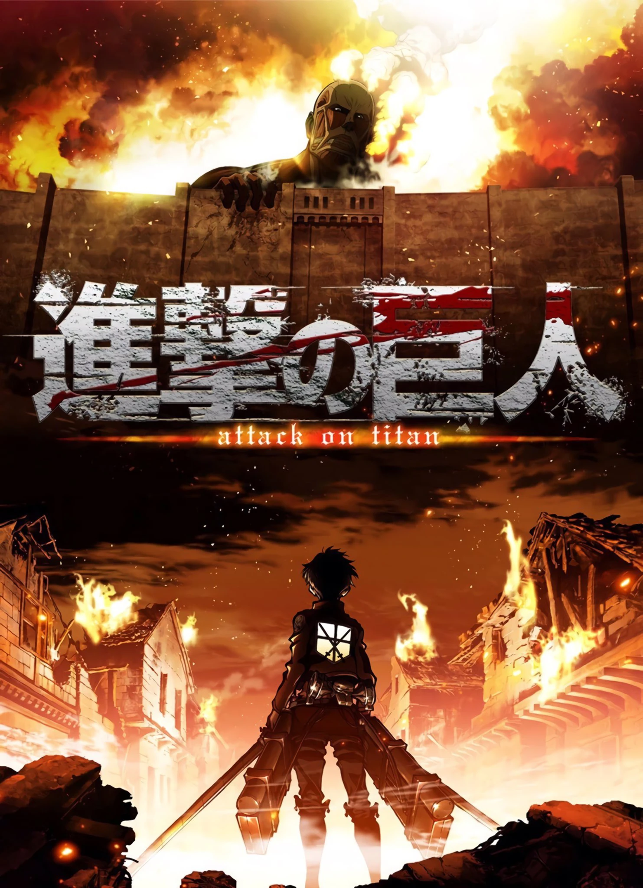

Attack on Titan
Quando os humanos são quase extintos por gigantes devoradores de homens, Eren Yeager, um jovem, se junta à luta para salvar a humanidade.
Assistir no CrunchyrollQuando os humanos são quase extintos por gigantes devoradores de homens, Eren Yeager, um jovem, se junta à luta para salvar a humanidade.
Assistir no Crunchyroll
Tanjirou Kamado se torna um caçador de demônios após sua família ser assassinada por esses seres malignos. Uma história de luta e superação.
Assistir no Crunchyroll
Em um mundo onde quase todos têm superpoderes, Izuku Midoriya, um garoto sem poderes, sonha em se tornar um herói.
Assistir no CrunchyrollEren Yeager é o protagonista de "Attack on Titan", determinado a destruir todos os titãs que ameaçam a humanidade.

Tanjirou é o protagonista de "Demon Slayer", conhecido por sua força de vontade inabalável e por seu desejo de salvar sua irmã Nezuko.

Izuku é o herói sem poderes de "My Hero Academia", mas com um grande coração e desejo de se tornar um grande herói como seu ídolo All Might.
Assista ao trailer do anime mais popular da temporada!
Anime World é um site dedicado a animes, com informações sobre seus personagens, trailers e muito mais.
Você pode entrar em contato através da nossa seção de contatos ou nos links de redes sociais no rodapé.
Sim! O site se adapta a dispositivos móveis e tablets.